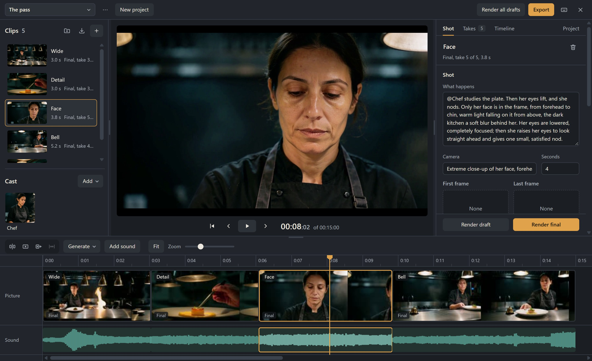

A video editor for MiniMax H3, inside ComfyUI.
Write shots, render them on your own GPU, and cut picture and sound together. Do it by hand, or hand the same timeline to an agent.
git clone https://github.com/igorls/comfyui-h3-editor
00:01:12 of 00:15:00
This kitchen scene was written and rendered by an agent through the editor's API, and exported from the editor as you see it: four shots of HyperFlow H3 Flash with their own sound, 15 seconds. The chef is one cast member, made from a single picture.
The launch film
The three shots in it are the ones above, rendered in the editor with their sound. The graphics around them are code, built by a coding agent with the open-source motion-graphics skill; the music was generated with YuE2.
What it does
-
Write shots, not graphs.
Describe what happens and what is said. The editor builds the ComfyUI graph, queues it, and shows the clip moving, with sound, while it samples.
What happensRender draft
-
Keep people and places the same.
Add their pictures to the cast, up to 8 per member, and write @Name in a shot or drag the member into the text. Give them a voice, or add a narrator who is only a voice.
Add referenceAdd voice
-
Join shots without a visible cut.
Extend a clip forward or back, bridge two clips, or merge a join. A new clip carries on from 39 real frames and the sound of the clips it joins. An empty space between two clips offers the bridge.
GenerateExtend forwardBridge to nextMerge with next
-
Edit as in any editor.
Trim, split, move, change speed, add transitions, flip between takes, file clips in bins, bring in your own footage and pictures, and export one video. Moving a rendered clip never renders it again.
SplitRipple deleteExport
-
Add music and narration.
Lay sound files under the cut on lanes of their own. Move them, trim them and set their volume; they play in step with the picture, and the export mixes them in.
Add sound
-
Try fast, finish large.
Drafts are small and quick. Finals are refined at up to 1920 pixels, with a realism LoRA for natural skin.
Render draftRender final
-
Bring your own models and LoRAs.
Eight H3 models are built in, and any other H3 checkpoint works with its own steps, sampler and scheduler, for the whole project or for one clip. Add LoRAs to the project or to one clip, set each one's strength, and choose whether it runs on every step or joins after the first ones.
Models and their settingsLoRAsLoRAs for this clip
-
Generate to a recorded voice.
Give a clip a recorded track, such as an approved narration, and its picture is generated to it. Extend forward carries on with the next part of the same track.
Track
-
Let an agent make the video.
Everything the editor does is an HTTP call, and an agent skill teaches the whole workflow. You and an agent can work on one project at once.
scripts/h3.py

Install
-
Add the pack to ComfyUI
You need a recent ComfyUI with its built-in MiniMax H3 support. In ComfyUI's
custom_nodesfolder:git clone https://github.com/igorls/ comfyui-h3-editor pip install -r comfyui-h3-editor/requirements.txt On the Windows portable build, run the second step as
..\python_embeded\python.exe -m pip install -r comfyui-h3-editor\. The requirements bring ffmpeg, for importing and exporting video, and the gguf reader for HyperFlow's GGUF models.requirements.txt Restart ComfyUI. H3 Editor appears in the sidebar.
-
Download the models
The pack does not download models. These are the ones a first video needs, about 54 GB:
File Folder Size Where to get it qwen3vl_32b_minimax_h3_nvfp4_awq.safetensorsmodels/text_encoders 15.7 GB Comfy-Org/MiniMax-H3, text_encoders/minimax_h3_video_vae_fp16.safetensorsmodels/vae5.2 GB Comfy-Org/MiniMax-H3, vae/minimax_h3_audio_vae_fp32.safetensorsmodels/vae0.6 GB Comfy-Org/MiniMax-H3, vae/minimax_h3_ref2va_hyperflow_flash_14b-int8_convrot.safetensorsmodels/diffusion_models/ hyperflow 16.4 GB VideoRebirthAI/hyperflow-h3-flash, ref2va_int8_convrot_comfyui/minimax_h3_fl2va_hyperflow_flash_14b-int8_convrot.safetensorsmodels/diffusion_models/ hyperflow 16.0 GB VideoRebirthAI/hyperflow-h3-flash, fl2va_int8_convrot_comfyui/HyperFlow's model page recommends these INT8 files on RTX GPUs with 24 GB or more. On a smaller GPU, take its GGUF files in their place, from Q8_0 at 15.2 GB down to Q3_K_M at 7.2 GB, anywhere in
models/diffusion_models; see models and quality.These are optional, and worth having:
File Folder Size Where to get it minimax_h3_latent_upscaler_3d_conv_v1_bf16.safetensorsFinals at up to 1920 pixelsmodels/latent_upscale_models 0.7 GB LBH-123-AI/Minimax_h3_latent_Upscaler MMH3-Realism-V2.safetensorsNatural skin in finalsmodels/loras71 MB Civitai model 3041489 taeh3.safetensorsThe moving live previewmodels/vae_approx 23 MB OzzyGT/taeh3 Other H3 checkpoints work as well. Seven more are built in, and you can add any H3 checkpoint file with its own steps, sampler and scheduler, and LoRAs trained on H3. Models and quality has the details.
-
Make your first video
- Open H3 Editor from the ComfyUI sidebar. It starts you on a first project.
- In the Project tab on the right, choose the format: 16:9, 9:16 or 1:1.
- Press New clip, write what happens in What happens, and press Render draft. The viewer shows the clip taking shape.
- When the draft lands, press Space to play it. Not right? Change the text and render again: each render becomes another take.
- Press Generate, then Extend forward, to carry the shot on, or add another clip.
- Press Render final for the takes you keep, then Export. The video is saved in ComfyUI's output folder, under
h3take_projects/<project>/exports.
For agents
Everything the editor does is an HTTP call. The h3-editor skill teaches an agent the whole workflow: plan the shots, render drafts, review them, join them, render finals and export. Its client, scripts/h3.py, needs only Python.
To install it, copy skills/h3-editor from the repo into your agent's skills folder.
The editor is a shared cutting room. An agent's changes appear in your open editor as it works, yours merge with its, and every change is a revision you can go back to.
$ python h3.py check
$ python h3.py create "The pass"
The_pass
$ python h3.py ops The_pass shots.json
$ python h3.py wait The_pass
$ python h3.py look The_pass
$ python h3.py render The_pass c822cf892 cc2eecf3a caa4b5e11 c23560c00 --final
$ python h3.py export The_pass
Exported to ComfyUI's output folder:
h3take_projects/The_pass/exports/The_pass_001.mp4